1 Úvod do jazyka R
Aplikovaná štatistika sa dnes robí na počítači. Existuje mnoho rôznych softvérov, ktoré môžete používať. My budeme používať jazyk R, ktorý má mnohé výhody.
- Je široko používaný v komunite (nielen) štatistikov, dátových analytikov, programátorov, vedcov, taktiež v priemysle.
- Jeho funkcionalita je veľmi široká. Veľmi veľa vecí sa s ním dá urobiť (napríklad aj táto webstránka).
- Je zadarmo.
1.1 R
Existuje neskutočné množstvo tutoriálov a veľmi kvalitných materiálov, ktoré sú vhodné na oboznámenie sa s R. Tu sú odkazy na niektoré z nich, ktoré považujem sa obzvlášť dobré.
- Rafael Irizarry: Data science in R https://rafalab.github.io/dsbook/data.html
- W. N. Venables, D. M. Smith and the R Core Team. “An Introduction to R” https://cran.r-project.org/doc/manuals/r-release/R-intro.pdf
- Wickham, Hadley, and Garrett Grolemund. R for data science: import, tidy, transform, visualize, and model data. ” O’Reilly Media, Inc.”, 2016. https://r4ds.had.co.nz
- Grant McDermott: Intro to Data Science https://github.com/uo-ec607/lectures
Kvalitné materiály sú v angličtine. Tak to skrátka je a neznalosť angličtiny výrazne znepríjemňuje, skoro až znemožnuje efektívnu prácu.
Takto vyzerá program RStudio, to je akoby obal, ktorý nám umožňuje efektívne a pohodlne pracovať s jazykom R.
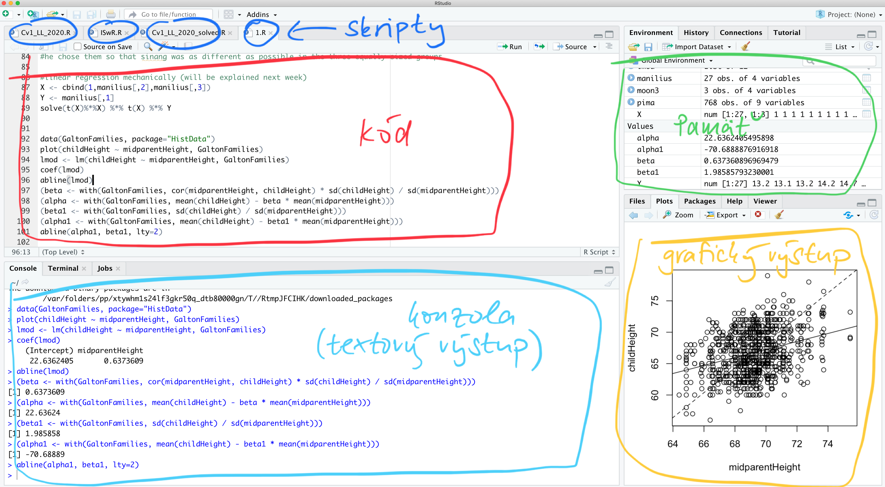
Obrázok 1.1: Ako vyzerá program RStudio.
Jednotlivé bloky sa dajú preusporiadať podľa preferencií používateľa. Treba si stiahnuť a nainštalovať Rko. To má však len jednoduché používateľné rozhranie (tomuto zvykneme hovoriť aj user interface). Nadstavbou nad obyčajným Rkovým prehliadačom je RStudio, ktoré je komerčný produkt, jeho desktop verzia (pre naše potreby úplne postačujúca) je však zadarmo.
1.2 Nejaké príklady R
Tu sú nejaké príklady aplikácií, ktoré sa dajú v R robiť. Možností je naozaj veľmi veľa.
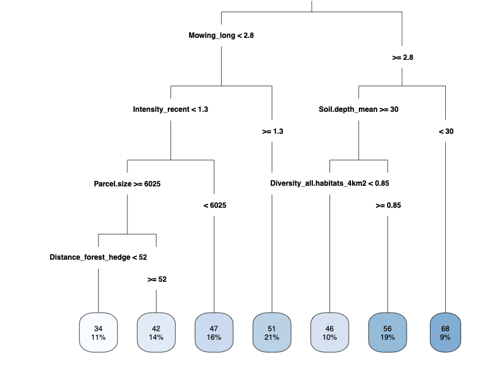
Obrázok 1.2: Vizualizácia regresného stromu v výskume, kde sa skúmala súvislosť biodiverzity s rôznymi faktormi.
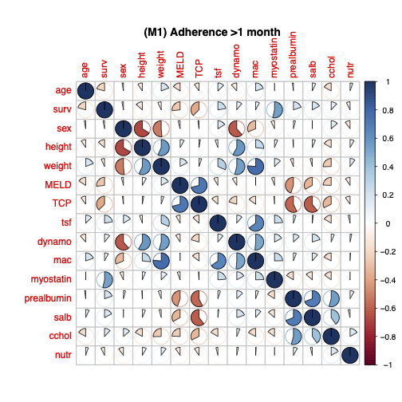
Obrázok 1.3: Korelačná matica rôznych faktorov pacientov v štúdii vzťahu adherencie k nutričným suplementom ku prežívaniu pacientov.
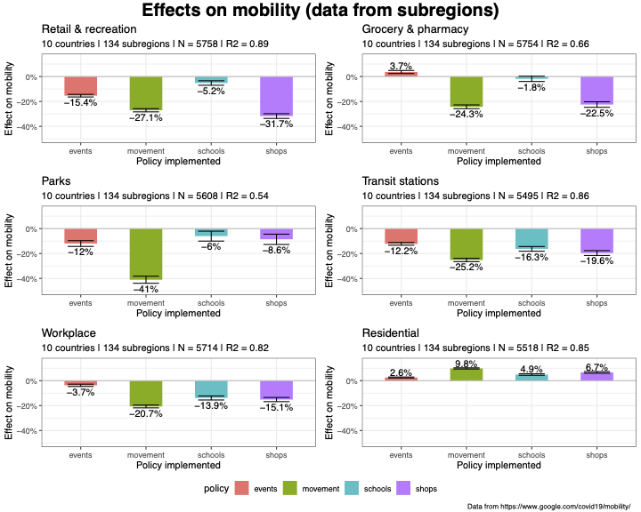
Obrázok 1.4: Vplyv opatrení na mobilitu počas začiatku obmedzenia pohyby počas COVID-éry v 2020.
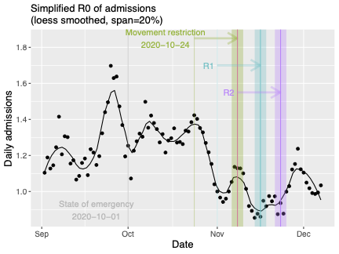
Obrázok 1.5: Vývoj epidémie (príjmy v nemocniciach) COVID-19 na Slovensku.
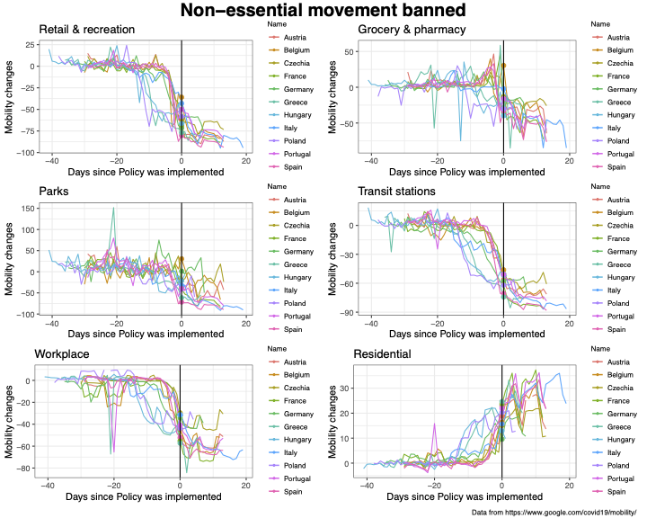
Obrázok 1.6: Vizualizácia zmeny mobilít v rôznych európskych krajinách.
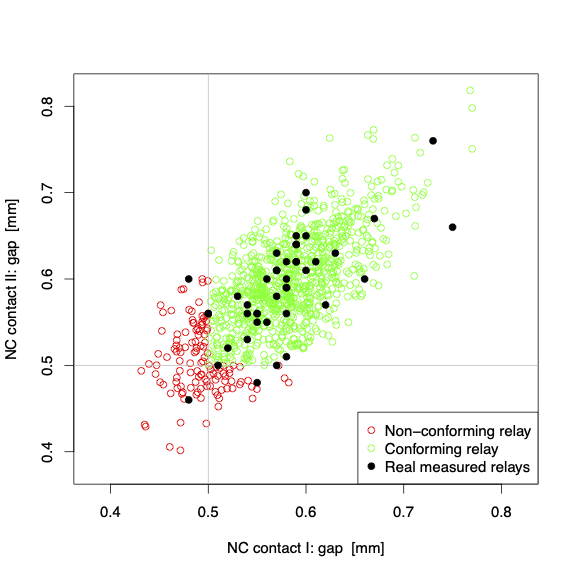
Obrázok 1.7: Kvantifikácia štatistickej neistoty spoľahlivosti relátok pomocou simulácie.
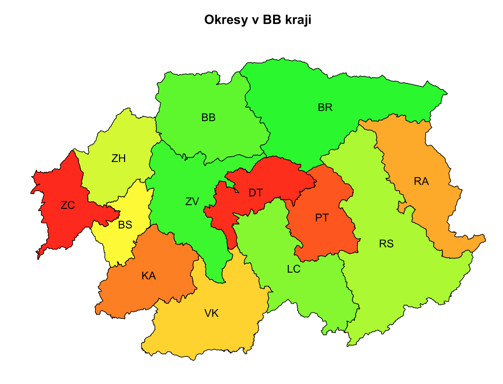
Obrázok 1.8: Kreslenie máp v prostredí R je priamočiare.
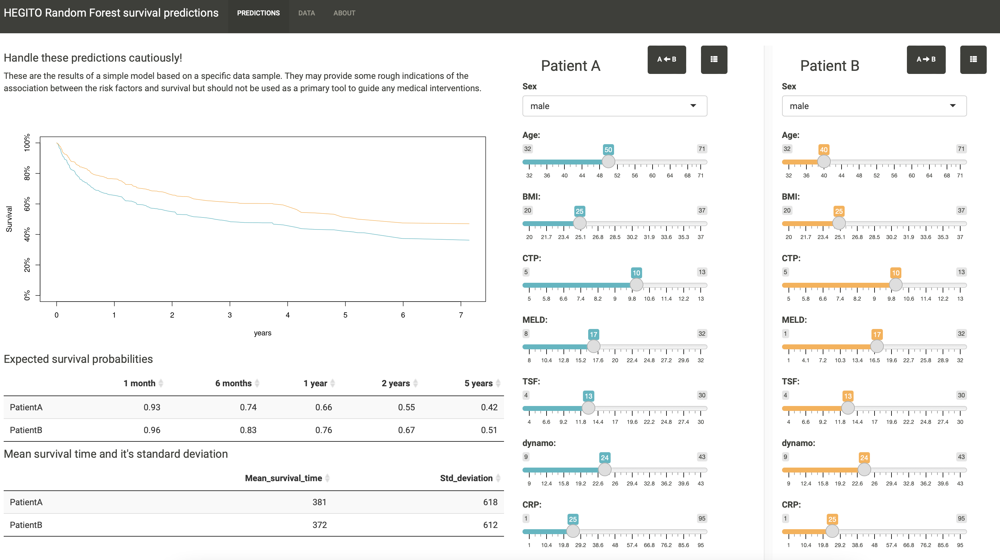
Obrázok 1.9: Dynamická webstránka prezentujúca výsledky štatistického modelu prežívania na základe metódy náhodného lesa. Porovnáva sa úmrtnostná krivka dvoch pacientov vo všetkých rizikových faktoroch rovnakých okrem veku. (diplomová práca Simony Zemanovej)
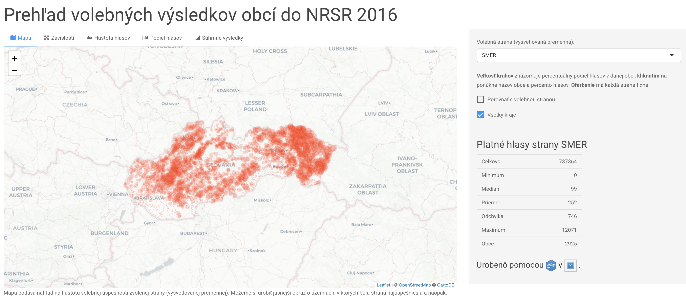
Obrázok 1.10: Dynamická webstránka prezentujúca výsledky parlamentných volieb (https://samuell.shinyapps.io/NRSR2016/ autor Samuel Hudec)
Obrázok 1.11: Dynamická webstránka ukazujúca podiely publikácií vysokých škôl v “predátorských” časopisoch. (https://samuell.shinyapps.io/publications/ autor Samuel Hudec)

Obrázok 1.12: Distribúcia utečencov z Ukrajiny. (https://smikula.shinyapps.io/uarefugees/ autor Štěpán Mikula)
1.3 Nevýhody R
Nevýhodou Rka je ťažký začiatok. Chvíľu trvá kým si človek zvykne na používanie, toto je špeciálne pravdivé pre ľudí, ktorí majú len málo skúseností s programovaním v nejakom inom jazyku.
Pre obrovské úlohy nemusí byť efektívny. Preto sa častokrát používa Rko na vytvorenie prototypu a keď treba problém aplikovať na obrovské dáta (škálovať) alebo nás zaujíma rýchlosť, tak iné programovacie jazyky môžu byť preferované.
Dôležitou vlastnosťou Rka je, že mnoho knižníc-programov je vytvorených nadšencami, a to zadarmo. Tieto sú častokrát rôznej kvality. Tie isté veci sa dajú robiť rôznymi spôsobmi - tie majú svoje výhody aj nevýhody.
1.4 A čo teraz.
Neexistuje žiaden zázračný tutoriál, ktorý je rádovo oveľa lepší ako iné. Čo je nutné, je dať tomu čas. Skúšať veci, vymýšľať nové veci, meniť existujúce, zaseknúť sa, rozbehnúť sa… Naučiť sa pracovať s R (ako aj programovať v akomkoľvek inom jazyku) sa vôbec nedá bez toho, aby ste tomu venovali veľké množstvo času.
Dobrou správou je, že syntax sa netreba učiť naspamäť. Skrátka si ju zapamätáte, keď s ňou budete robiť a znova zabudnete, keď s ňou prestanete robiť. Je úplne v poriadku nepamätať si veci. Nepamätáme si síce veci ale v čase sa učíme výrazne rýchlejšie ich vyhľadávať na internete. Asi nebude prekvapením, že schopnosť vyhľadávať informácie alebo riešiť problémy vyhľadávaním na internete je absolútne kľúčová.
Obrázok 1.13: Nie je hanbou gúglovať. (Zdroj: internety.)
1.5 Demonštrácia v R
Príklady v Rku budú častokrát inšpirované publikáciou P. DALGAARD - Introductory Statistics with R, Springer 2nd edition.
## [1] 4## [1] 7.389056Rozličné textové prehliadače majú nastavané rôzne kódovanie. Preto, ak chceme produkovať čitateľný kód je dobrým nápadom sa vyhýbať dĺžňom a mäkčeňom.
# Je dobrou praxou p4sa& koment!re v angli@tine alebo aspo? bez diakritiky.
# Je dobrou praxou pisat komentare v anglictine alebo aspon bez diakritiky.
# It is a good idea to write comments in english or without special symbols. Nakreslíme nejaké náhodne vygenerované čísla.
#plot a vector of 100 realizations of normally distributed
# random variables with mean 0 and variance 1
plot(rnorm(100))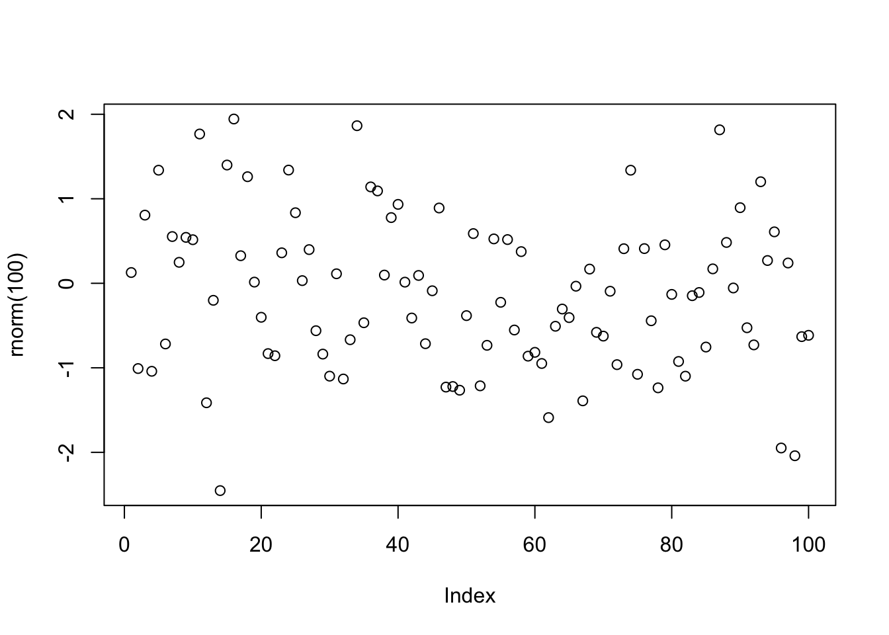
Vytvoríme 15 ďalších náhodných čísel.
#create a vector of 15 realizations of normally distributed random variables with mean 0 and variance 1
rnorm(15)## [1] -0.46536106 0.53291015 0.28579027 0.13461023 -2.48366784 0.09244128
## [7] -0.10335752 -0.28455916 1.12093731 1.16449557 1.30415091 0.82450567
## [13] -0.06107535 -0.12541842 -0.92697504Do premennej uloźíme číslo. Na to použijeme šípku. Odteraz bude mať Rko uložené, že v x bude 2.
Vypísaním sa pozrieme, čo je vnútri.
## [1] 2S objektami, ktoré sú v pamäti môžeme robiť všelijaké operácie. Napríklad ich sčitovať.
## [1] 4Šípkou si uložíme do premennej aj skupinu objektov, napríklad čísel.
#save a vector of weights. this is a column vector with 6 elements
weight <- c(60, 72, 57, 90, 95, 72)
weight## [1] 60 72 57 90 95 72A robíme s nimi všelijaké aritmetické operácie.
## [1] 19.59184 22.22222 20.93664 24.93075 31.37799 19.73630Sčítanie elementov vektora.
## [1] 446Rôzne operácie môžeme skladať.
## [1] 74.33333## [1] -14.333333 -2.333333 -17.333333 15.666667 20.666667 -2.333333## [1] 205.444444 5.444444 300.444444 245.444444 427.111111 5.444444## [1] 1189.333## [1] 15.42293Na všetky bežné operácie už máme predpripravené funkcie priamo v Rku.
## [1] 74.33333## [1] 15.42293Ako aj napríklad na testovanie hypotézy, či je stredná hodnota nejakej premennej rovná určitej hodnote pomocou t-testu.
##
## One Sample t-test
##
## data: bmi
## t = 0.34488, df = 5, p-value = 0.7442
## alternative hypothesis: true mean is not equal to 22.5
## 95 percent confidence interval:
## 18.41734 27.84791
## sample estimates:
## mean of x
## 23.13262Neodmysliteľnou časťou dátovej analýzy je spoznávanie vzťahov medzi rôznymi premennými.
#what is the relationship between height and weight?
plot(height,weight)
hh <- c(1.65, 1.70, 1.75, 1.80, 1.85, 1.90)
lines(hh, 22.5 * hh^2)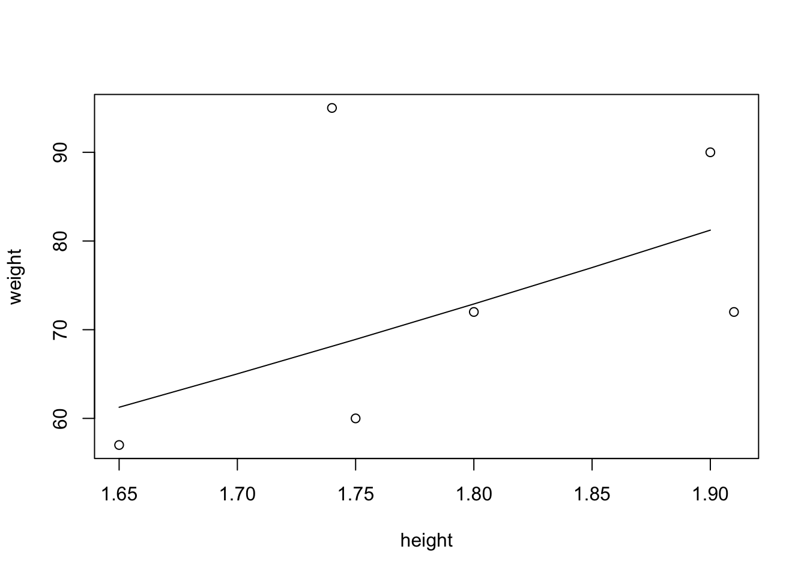
## function (x, y = NULL, type = "p", xlim = NULL, ylim = NULL,
## log = "", main = NULL, sub = NULL, xlab = NULL, ylab = NULL,
## ann = par("ann"), axes = TRUE, frame.plot = axes, panel.first = NULL,
## panel.last = NULL, asp = NA, xgap.axis = NA, ygap.axis = NA,
## ...)
## NULLV rámci prostredia R nemusíme pracovať len s číslami. Pokojne to môžu byť texty.
## [1] "Huey" "Dewey" "Louie"## [1] "Huey" "Dewey" "Louie"## [1] TRUE TRUE FALSE TRUE## [1] FALSE FALSE FALSE FALSE TRUE FALSE## Huey Dewey Louie## Huey Dewey Louie## What is "R"?Pomocou funkcie c() zreťazíme rôzne objekty do jedného.
## [1] 42 57 12 39 1 3 4## [1] 1 2 3 10 20 5## red blue green
## "Huey" "Dewey" "Louie"K názvom elementov pristupujeme pomocou funkcie names().
## [1] "red" "blue" "green"Zreťazením rôznych typov objektov Rko zmení ich typ. Toto aj dobré aj zlé. Dobré je to, lebo to vie urobiť písanie kódu pohodlnejším. Zlé je to, lebo to môže zneprehľadniť prácu, Rovnaký objekt FALSE môže byť chápaný aj ako číslo, aj ako textový reťazec, aj ako logická premenná.
## [1] 0 3## [1] "3.14159265358979" "abc"## [1] "FALSE" "abc"Postupnosť čísel získame použitím seq().
## [1] 4 5 6 7 8 9## [1] 4 6 8 10## [1] 4 5 6 7 8 9Užitočnou funkciou je rep() ktorá zopakuje objekt niekoľko krát
## [1] 7 9 13 7 9 13 7 9 13## [1] 7 9 9 13 13 13Funkcia dim() zmení dimenzie objektu. Napríklad vektor čísel preusporiada do tabuľky (matice).
## [1] 1 1 1 1 1 1 1 1 1 1 2 2 2 2 2 2 2 2 2 2 2 2 2 2 2## [,1] [,2] [,3] [,4]
## [1,] 1 4 7 10
## [2,] 2 5 8 11
## [3,] 3 6 9 12Riadkom alebo aj stĺpcom tabuľky môžeme dávať mená.
## [,1] [,2] [,3] [,4]
## [1,] 1 2 3 4
## [2,] 5 6 7 8
## [3,] 9 10 11 12## [,1] [,2] [,3] [,4]
## A 1 2 3 4
## B 5 6 7 8
## C 9 10 11 12Funkcia t() otočí tabuľku - transponuje ju.
## A B C
## [1,] 1 5 9
## [2,] 2 6 10
## [3,] 3 7 11
## [4,] 4 8 12Rôzne stĺpce môžeme spojiť cez cbind().
## A B C
## [1,] 1 5 9
## [2,] 2 6 10
## [3,] 3 7 11
## [4,] 4 8 12Rôzne riadky môžeme spojiť cez rbind().
## [,1] [,2] [,3] [,4]
## A 1 2 3 4
## B 5 6 7 8
## C 9 10 11 12Niekedy je pohodlné pracovať s faktorovou premennou. To je premenná, ktorá má rôzne hodnoty alebo úrovne. Môže ale nemusí byť usporiadaná.
pain <- c(0,3,2,2,1)
#create a factor variable. factors are labels
fpain <- factor(pain,levels=0:3)
fpain <- factor(pain,levels=0:3, ordered = TRUE)Hodnoty faktorov môžeme meniť. Toto vie byť užitočné pri dotazníkovom prieskume, kedy hodnoty môžu byť: silne nesúhlasím, nesúhlasím, nemám názor, súhlasím, silne súhlasím.
## [1] none severe medium medium mild
## Levels: none < mild < medium < severeFaktorovú premennú vieme pretransformovať naspäť na číselnú (numerickú).
## [1] 1 4 3 3 2## [1] "none" "mild" "medium" "severe"Niekedy pracujeme so zoznamami (listami). K objektom zo zoznamu pristupujeme pomocou symbolu $.
#lists
intake.pre <- c(5260,5470,5640,6180,6390,
6515,6805,7515,7515,8230,8770)
intake.post <- c(3910,4220,3885,5160,5645,
4680,5265,5975,6790,6900,7335)
mylist <- list(before=intake.pre,after=intake.post)
mylist## $before
## [1] 5260 5470 5640 6180 6390 6515 6805 7515 7515 8230 8770
##
## $after
## [1] 3910 4220 3885 5160 5645 4680 5265 5975 6790 6900 7335## [1] 5260 5470 5640 6180 6390 6515 6805 7515 7515 8230 8770Ďalšou užitočnou štruktúrou je dátová tabuľka.
## intake.pre intake.post
## 1 5260 3910
## 2 5470 4220
## 3 5640 3885
## 4 6180 5160
## 5 6390 5645
## 6 6515 4680
## 7 6805 5265
## 8 7515 5975
## 9 7515 6790
## 10 8230 6900
## 11 8770 7335## [1] 5260 5470 5640 6180 6390 6515 6805 7515 7515 8230 8770Do vektorov, matíc alebo dátových tabuliek môžeme pristupovať cez indexy cez hranaté zátvorky []. Použitím symbolu mínus - odstratíme časti vektora alebo tabuľky.
## [1] 6390## [1] 5640 6390 6805## [1] 5640 6390 6805## [1] 5260 5470 5640 6180 6390## [1] 5260 5470 6180 6515 7515 7515 8230 8770K častiam vektorov, matíc alebo dátových tabuliek môžeme pristupovať aj cez logické premenné, teda premenné typu TRUE alebo FALSE. Funkcie head() a tail() slúžia na vypísanie prvých 5 alebo posledných 5 pozorovaní v dátovej tabuľke. Pozrieť sa na surové dáta v tabuľke je vždy užitočné.
## [1] 5975 6790 6900 7335## [1] 5975 6790## [1] FALSE FALSE FALSE FALSE FALSE FALSE FALSE TRUE TRUE FALSE FALSE## [1] 6390## intake.pre intake.post
## 5 6390 5645## intake.pre intake.post
## 8 7515 5975
## 9 7515 6790
## 10 8230 6900
## 11 8770 7335## [1] FALSE FALSE FALSE FALSE FALSE FALSE FALSE TRUE TRUE TRUE TRUE## intake.pre intake.post
## 8 7515 5975
## 9 7515 6790
## 10 8230 6900
## 11 8770 7335## intake.pre intake.post
## 1 5260 3910
## 2 5470 4220## intake.pre intake.post
## 1 5260 3910
## 2 5470 4220
## 3 5640 3885
## 4 6180 5160
## 5 6390 5645
## 6 6515 4680## intake.pre intake.post
## 6 6515 4680
## 7 6805 5265
## 8 7515 5975
## 9 7515 6790
## 10 8230 6900
## 11 8770 7335Knižnicu zavoláme príkazom library() a nainštalujeme pomocou install.package().
## expend stature
## 1 9.21 obese
## 2 7.53 lean
## 3 7.48 lean
## 4 8.08 lean
## 5 8.09 lean
## 6 10.15 lean
## 7 8.40 lean
## 8 10.88 lean
## 9 6.13 lean
## 10 7.90 lean
## 11 11.51 obese
## 12 12.79 obese
## 13 7.05 lean
## 14 11.85 obese
## 15 9.97 obese
## 16 7.48 lean
## 17 8.79 obese
## 18 9.69 obese
## 19 9.68 obese
## 20 7.58 lean
## 21 9.19 obese
## 22 8.11 leanexp.lean <- energy$expend[energy$stature=="lean"]
exp.obese <- energy$expend[energy$stature=="obese"]
l <- split(energy$expend, energy$stature)
l## $lean
## [1] 7.53 7.48 8.08 8.09 10.15 8.40 10.88 6.13 7.90 7.05 7.48 7.58
## [13] 8.11
##
## $obese
## [1] 9.21 11.51 12.79 11.85 9.97 8.79 9.69 9.68 9.19Funkcie môžeme kombinovať a vnárať do seba.
## [1] 0.8584414 1.3836098 0.8843141 0.7148312 0.9985373 0.7455489 0.9654983
## [8] 1.0547334 1.3310710 0.8238723## [,1] [,2] [,3]
## [1,] -3.048014 1.4289930 0.4816430
## [2,] 1.611982 0.1269286 -2.1449991
## [3,] -1.794662 1.3769414 0.5456861
## [4,] 1.074512 0.8017486 0.9044146Ak potrebujeme jednu funkciu aplikovať mnoho krát na rôzne podčasti objektu môžeme použiť lapply(),sapply(),apply() alebo tapply(), ktorých výstupom bude zoznam, vektor alebo tabuľka.
## $blood.glucose
## [1] 10.3
##
## $short.velocity
## [1] 1.325652## blood.glucose short.velocity
## 10.300000 1.325652## [1] -3.0480138 0.1269286 -2.1449991## lean obese
## 7.90 9.69Funkcie sort() a order() nám usporiadajú vektor alebo určia poradie jednotlivých elementov.
## [1] 3910 4220 3885 5160 5645 4680 5265 5975 6790 6900 7335## [1] 3885 3910 4220 4680 5160 5265 5645 5975 6790 6900 7335## [1] 3 1 2 6 4 7 5 8 9 10 11## [1] 3885 3910 4220 4680 5160 5265 5645 5975 6790 6900 7335## [1] 5640 5260 5470 6515 6180 6805 6390 7515 7515 8230 8770## pre post
## 3 5640 3885
## 1 5260 3910
## 2 5470 4220
## 6 6515 4680
## 4 6180 5160
## 7 6805 5265
## 5 6390 5645
## 8 7515 5975
## 9 7515 6790
## 10 8230 6900
## 11 8770 73351.6 Na záver úvodu
Ako ste si určite mohli všimnúť, pracovať s Rkom je relatívne priamočiare. Štruktúra syntaxe je intuitívna, len si na ňu treba zvyknúť, čo na začiatku môže byť prácne, ba priam nepríjemné. Každopádne na začiatku je oveľa rýchlejšie veci vyskúšať namiesto prácneho štúdia dokumentácie. Tým, že Rku budete venovať čas odstránite počiatočné bariéry a ukáže sa množstvo užitočných aplikácií. Rovnako sa zníži bariéra prístupu k iným programovacím jazykom.
1.7 Cvičenia
Cvičenie 1.1 Uvažujte nasledovné filmy s hodnoteniami a dĺžkou (v min).
films <- c("Terminator 3", "Titanic", "Matrix", "Love actually", "The Godfather","12 Angry Men","The Dark Knight")
score <- c(99,92,87,93,98,97,92)
time <- c(109,194,136,135,175,96,152)- Zostrojte vektor
own_score, ktorý bude obsahovať Vaše vlastné hodnotenie týchto filmov. - Zostrojte
data.frames názvomdb, ktorý bude pozostávať z názvu filmu, skóre, vášho vlastného skóre ako aj dĺžky. - Vypíšte Vaše vlastné skóre pre filmy, ktoré sú dlhšie ako 2 hodiny.
- Aký je priemer dĺžky filmu pre Vaše tri najneobľúbenejšie filmy?
- Zobrazte Vaše vlastné hodnotenie
own_scoreoproti daného hodnoteniuscore. - V rámci tejto vzorky filmov máte radi skôr dlhšie alebo kratšie filmy?
Cvičenie 1.2 Napíšte príkaz do jedného riadku, ktorého výsledkom je toto
## [,1] [,2] [,3] [,4] [,5] [,6] [,7] [,8] [,9]
## [1,] 1 1 1 1 1 1 1 1 1
## [2,] 1 1 1 1 1 2 2 2 2
## [3,] 2 2 2 2 2 2 2 2 2
## [4,] 3 3 3 3 3 3 3 3 3
## [5,] 3 3 3 4 4 4 4 4 4
## [6,] 4 4 4 4 4 5 5 5 5
## [7,] 5 5 5 5 5 5 6 6 6
## [8,] 6 6 6 6 6 6 7 7 7
## [9,] 7 7 7 7 7 8 8 8 8
## [10,] 8 8 8 9 9 9 9 9 9Cvičenie 1.3 Nainštalujte a načítajte si knižnicu ggplot2movies, ktorá obsahuje hodnotenia zo stránky imdb.com do roku 2015. V datasete movies sa nachádza množstvo zaujímavých informácií. S týmito budeme teraz pracovať. O datasete si môžete prečítať napríklad tu https://cran.r-project.org/web/packages/ggplot2movies/ggplot2movies.pdf a tu https://rwebapps.shinyapps.io/movie-app/
- Pozrite sa na sumárne štatistiky filmov (môžete použiť funkciu
summary()). Ktorý žáner dominuje, čo sa podielu na trhu týka? - Aký je najstarší komediálny film?
- Ktorý animovaný film, vydaný neskôr ako 1980, dlhší ako 30 minút má najlepší a ktorý najhorší rating?
- Ktorý animovaný film s aspoň 1000 hlasmi, vydaný neskôr ako 1980, dlhší ako 30 minút má najlepší a ktorý najhorší rating?
- Ako sa volá najhoršia romantická komédia minulého tisícročia?
- Zostrojte zoznam 10 najhorších filmov s rozpočtom väčším ako 20 miliónov.
- Ktorý žáner je najúspešnejší po roku 2000?
- Stúpa počet recenzií v čase pre akčné filmy?
- Pouźitím funkcie
str_detect()z knižnicestringrzistite, ktorých filmov je viacej. Tých o Terminátorovi, Batmanovi alebo o Star Wars? - Pomocou funkcie
pairs()zobrazte vzájomné grafy číselných premennýchyear,lengtharating. Zopár filmov je podozrivo dlhých. Ktoré sú to? - Opýtajte sa Vášho suseda/susedky nejakú zaujímavú otázku, ktorá sa dá týmto datasetom zodpovedať.